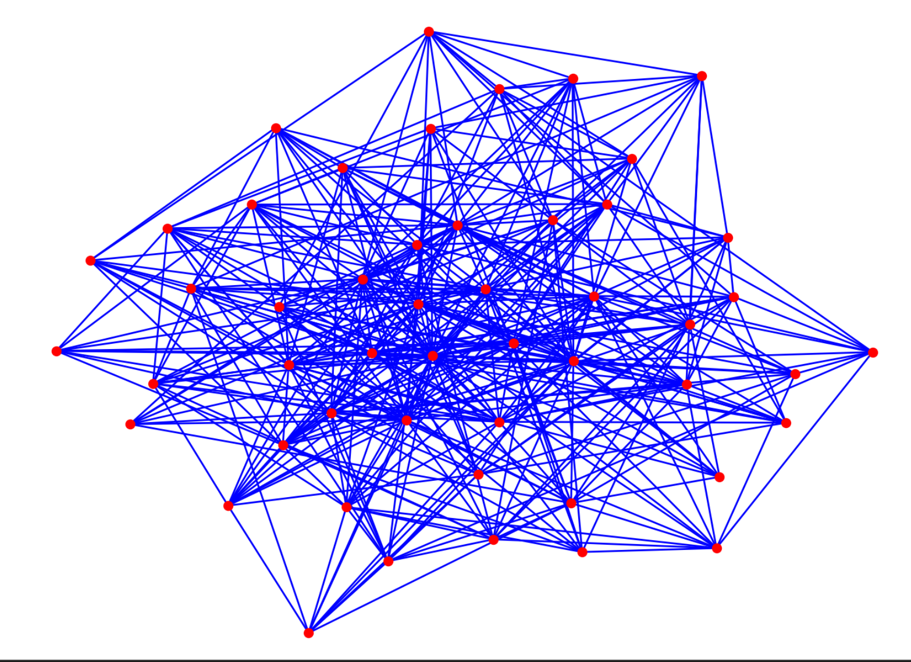
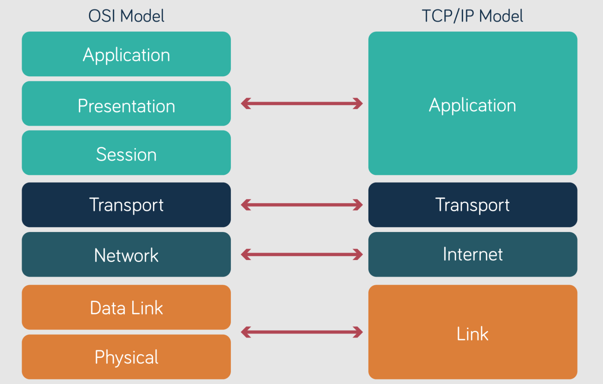
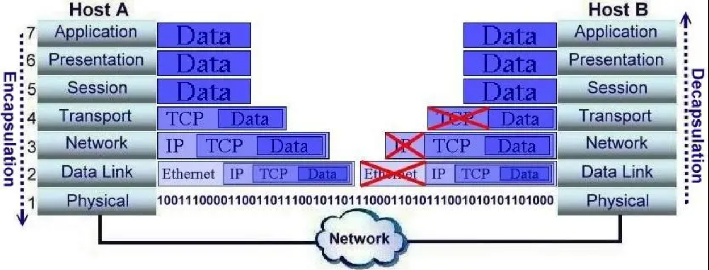

00 — Modello ISO/OSI
Il modello ISO/OSI e i meccanismi di comunicazione tra host
Sommario
1. Concetti introduttivi
Definizione: una rete è una struttura a nodi collegati da archi associativi che permette lo scambio di informazioni.
Gerarchia dei dispositivi:
Switch (locale) → Router (geografico) → Modem (fisico/segnale)

La rete è un grafo.
Tipi di reti
PAN (Personal Area Network)
- Microstruttura a nodi che copre pochi metri.
- Esempio: Bluetooth.
LAN (Local Area Network)
- Host che comunicano tra loro tramite switch.
- Rete privata e locale.
WAN (Wide Area Network)
- Interconnessione di più LAN tramite router.
- Utilizza protocolli di routing (Network Layer) per instradare i pacchetti geograficamente.
2. Architettura: il modello ISO/OSI
Perché esiste?
Per standardizzare la comunicazione attraverso uno stack protocollare ed evitare che ogni azienda utilizzi logiche proprietarie incompatibili.

Il modello OSI è teorico, mentre TCP/IP è lo standard implementato.
3. I sette livelli dello stack OSI
I livelli sono presentati dal basso, più vicino all’hardware, verso l’alto, più vicino al software.
Media layers: hardware e trasporto dei dati
L1 — Physical Layer (fisico)
- Cosa fa: trasmissione fisica dei bit.
- Mezzo: cavo in rame, fibra oppure onde radio.
- Indirizzamento: nessuno.
L2 — Data-Link Layer (collegamento)
- Cosa fa: comunicazione tra dispositivi locali (LAN).
- Dispositivo: switch.
- PDU (unità dati): frame.
- Indirizzamento: MAC address fisico, sorgente e destinazione.
L3 — Network Layer (rete)
- Cosa fa: instradamento su reti geografiche (WAN).
- Dispositivo: router.
- Protocolli: IP (Internet Protocol) e routing con rotte statiche o dinamiche.
- Indirizzamento: indirizzo IP logico.
Host layers: software e processi
L4 — Transport Layer (trasporto)
- Cosa fa: gestione della comunicazione end-to-end e delle sessioni (socket).
- Indirizzamento: porte, utilizzate per identificare il processo nel sistema operativo.
- Protocolli:
UDP: velocità maggiore dell’affidabilità, ad esempio nello streaming.TCP: affidabilità maggiore della velocità, ad esempio per web e file.
L5 — Session Layer
Gestisce la sessione utente, inclusi sincronizzazione e login.
L6 — Presentation Layer
Gestisce codifica, compressione e crittografia dei dati.
L7 — Application Layer
Fornisce l’interfaccia utente attraverso protocolli come HTTP, DNS e quelli utilizzati per la posta elettronica.
- PDU: payload (messaggio).
Riepilogo
| Livello | Nome PDU (dati) | Indirizzamento | Dispositivo chiave |
|---|---|---|---|
| L7 — Application | Payload / messaggio | Email, URL | PC / server |
| L4 — Transport | Segmento (TCP) | Porta, ad esempio 80 o 443 | Firewall / host |
| L3 — Network | Pacchetto / datagramma | Indirizzo IP | Router |
| L2 — Data-Link | Frame | MAC address | Switch |
| L1 — Physical | Bit | — | Hub / cavi |
4. Meccanismi di comunicazione
Adjacent layer interaction
Un livello alto chiede un servizio al livello immediatamente inferiore.
- Esempio: L7 (Application) chiede a L4 (Transport) di spedire i dati.
Same layer interaction
È la comunicazione logica tra lo stesso livello di due host diversi.
- Esempio: il livello Transport dell’host A comunica con il livello Transport dell’host B.
Questo avviene attraverso incapsulamento e decapsulamento.
Incapsulamento e decapsulamento

La struttura dati implementata dal modello OSI è una pila.
Il viaggio del pacchetto attraverso lo stack avviene in tre fasi:
- Host A (mittente): incapsula i dati aggiungendo header e trailer.
Dati→TCP→IP→MAC→Bit.
- Dispositivi intermedi:
- Lo switch apre fino a L2, legge il MAC address, incapsula nuovamente e inoltra.
- Il router apre fino a L3, legge l’indirizzo IP, cambia il MAC address del destinatario, incapsula nuovamente e inoltra.
- Host B (destinatario): decapsula i dati rimuovendo le intestazioni.
- Legge e rimuove gli header strato per strato fino a ottenere il payload pulito.
Nota: un dispositivo intermedio non deve implementare l’intero stack. Lo switch si ferma al Layer 2, mentre il router arriva fino al Layer 3.
Per approfondire l’invio dei pacchetti in una simulazione con Cisco Packet Tracer, consulta il video dedicato su YouTube.